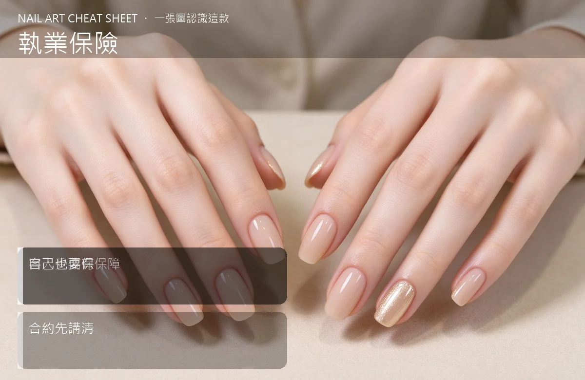

美甲執業保險是什麼？進階入門攻略
做美甲難免會失手——一瓶卸甲水灑到客人衣服、甘皮剪流血，保險是你出事那晚睡得著的關鍵。
執業保險原理與辨識重點：美甲師不說的客人受傷有保障
執業保險主要是『第三人責任險』：當你在執業過程中，造成客人或第三方身體、財產損害時，由保險公司賠償。舉例：甘皮剪不小心剪破流血、過敏反應送醫、卸甲水弄壞她的名牌衣、燈具傾倒砸到她。這些事一旦發生，沒保險就是你自己掏錢。
誰適合做執業保險？風險防護對號入座
已經有實體店、或每個月穩定接 20 個以上客人的獨業者；剛開始在家接案的新手，可以等穩定再買，但不要永遠不買。
執業保險美甲施作步驟：責任險
第一步：找產險公司（或保險經紀人）詢問『美容業責任險』或『美甲業執業責任險』的方案。第二步：確認保單內容——身體傷害賠多少、財產損失賠多少、有沒有過敏反應或感染的特別條款。第三步：把保單號碼放在店裡，並在合約／Line 預約確認中提到『本店已投保執業責任險』。第四步：真的出事，第一時間拍照、保留證據，立刻通知保險公司。
執業保險優缺點分析：美甲持久度與傷甲評估
| 優點 | 說明 |
|---|---|
| 保費一年大概幾千到一萬多元，比你一次賠償少太多；對客人來說，看到你有保險，信任感也升級。 | 是通用流派的招牌，進階就能上手 |
| 缺點 | 說明 |
| 很多細節要讀懂：自負額、排除條款、理賠範圍。懶得看就會買到『出事才發現沒保到』的保單。 | 前置與三雷：①以為『我都很小心、不用保險』——意外不認人；②只看保費便宜、不看理賠範圍；③真的出事第一時間私了賠錢、沒留證據，之後保險不理賠。沒顧好會打折 |

執業保險新手雷區：自己也要保與常見錯誤
注意：三雷：①以為『我都很小心、不用保險』——意外不認人；②只看保費便宜、不看理賠範圍；③真的出事第一時間私了賠錢、沒留證據，之後保險不理賠。
執業保險和其他美甲做法的差別比較
執業保險跟『一般意外險』不一樣。一般意外險保的是『你自己受傷』，執業責任險保的是『你造成別人受傷或損失』。兩個都要，但重點是後者。
執業保險美甲常見問題 FAQ
Q：在家接案需要保嗎？ A：月收不穩定的新手，可以先做基本的『營業場所責任險』；但只要有穩定收入、有實際店面，就一定要補上執業責任險。
Q：保費大概多少？ A：一般美容業責任險一年數千到一萬多，視額度而定。你做的項目風險越高（例如水晶、矯正），額度建議越高。
Q：客人過敏反應算在保險嗎？ A：要看保單條款。有些特別排除『已知過敏體質』，有些涵蓋『治療相關費用』。買之前請保險經紀人白紙黑字寫清楚。